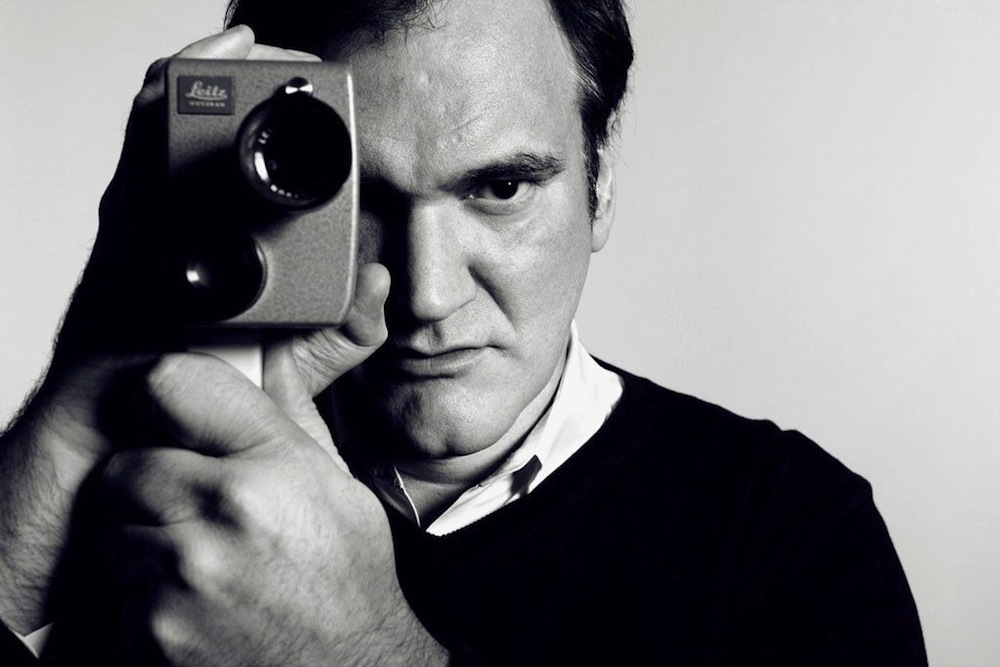
Quentin Jerome Tarantino (narodený 27. marca 1963) je americký filmový režisér, scenárista, producent, kameraman a herec. Na začiatku 90. rokov bol nezávislým filmárom, ktorého filmy využívali nelineárne dejové línie a estetizáciu násilia. Jeho filmy mu priniesli množstvo ocenení Academy Award (Oscar), Zlatý glóbus, BAFTA a Zlatú palmu a bol nominovaný aj na ceny Emmy a Grammy. V roku 2007 ho časopis Total Film označil za 12. najlepšieho režiséra všetkých čias. Tarantino sa narodil v Knoxville v štáte Tennessee ako syn Connie McHugh Tarantino Zastoupil, zdravotnej sestry narodenej v Knoxville, a Tonyho Tarantina, herca a amatérskeho hudobníka narodeného v Queens v New Yorku. Tarantinova matka mu dovolila ukončiť školu vo veku 17 rokov, aby mohol navštevovať herecký kurz na plný úväzok. Počas štúdia herectva sa Tarantino prestal venovať herectvu, pretože uviedol, že viac obdivuje režisérov než hercov. Predtým, ako sa stal filmárom, pracoval aj vo videopožičovni, kde si všímal, aké filmy si ľudia najčastejšie požičiavajú, a túto skúsenosť neskôr označil za inšpiráciu pre svoju režisérsku kariéru.
Filmové špekulácie – klikni sem pre kúpu knihy
V tejto knihe Quentin Tarantino rozoberá svoje obľúbené filmy zo 70. rokov, analyzuje režisérske techniky a zdieľa vlastné skúsenosti s tým, ako ho tieto filmy ovplyvnili pri tvorbe jeho kariéry. Kniha ponúka jedinečný pohľad na filmové umenie očami jedného z najvýznamnejších režisérov súčasnosti.
| Plagát | Film | Rok | Hlavné role |
|---|---|---|---|
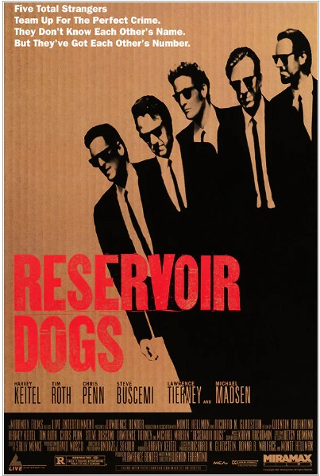 | Reservoir Dogs | 1992 | Harvey Keitel, Tim Roth, Michael Madsen |
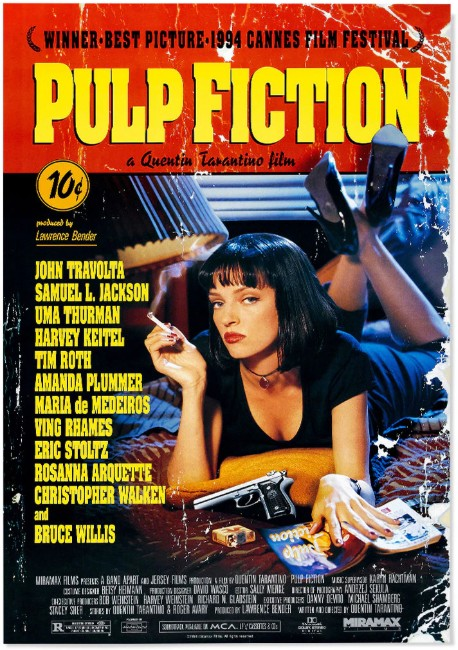 | Pulp Fiction | 1994 | John Travolta, Samuel L. Jackson, Uma Thurman |
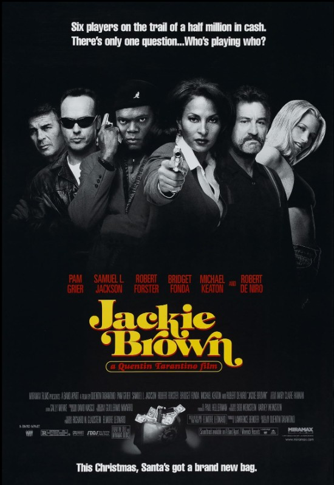 | Jackie Brown | 1997 | Pam Grier, Samuel L. Jackson, Robert Forster |
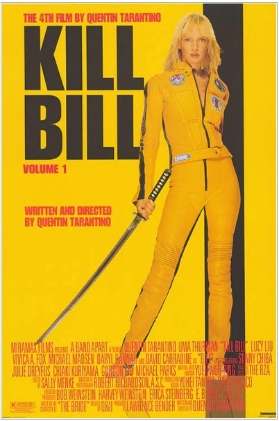 | Kill Bill Vol. 1 | 2003 | Uma Thurman, Lucy Liu, Vivica A. Fox |
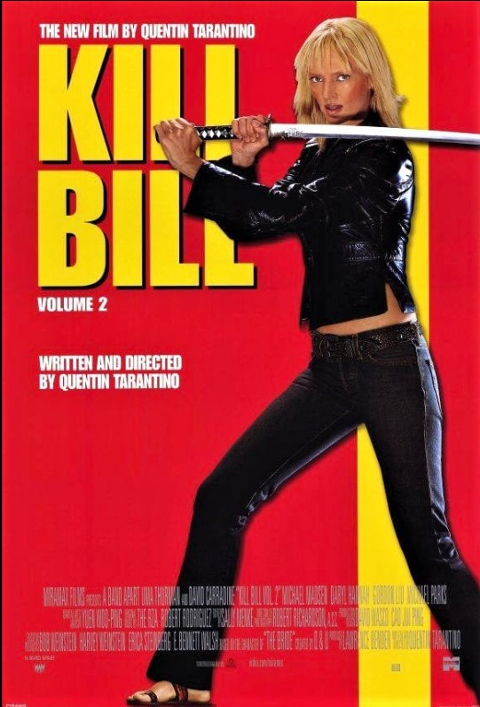 | Kill Bill Vol. 2 | 2004 | Uma Thurman, David Carradine, Michael Madsen |
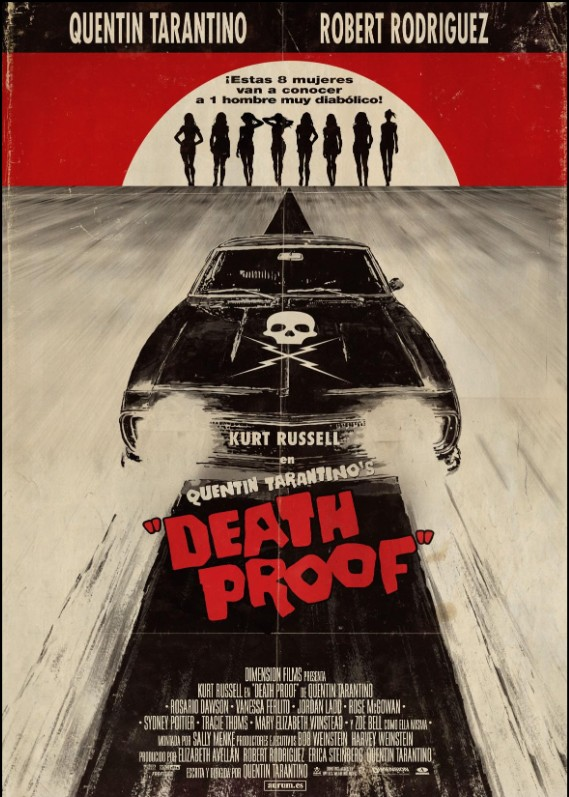 | Death Proof | 2007 | Kurt Russell, Rosario Dawson, Zoë Bell |
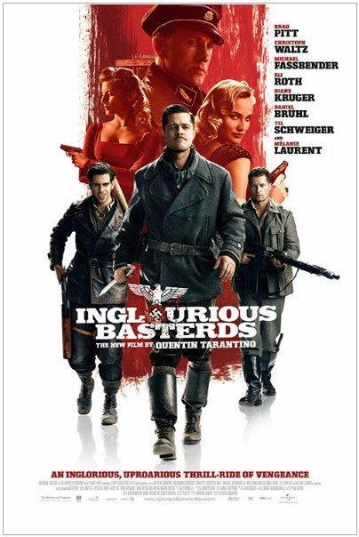 | Inglourious Basterds | 2009 | Brad Pitt, Christoph Waltz, Mélanie Laurent |
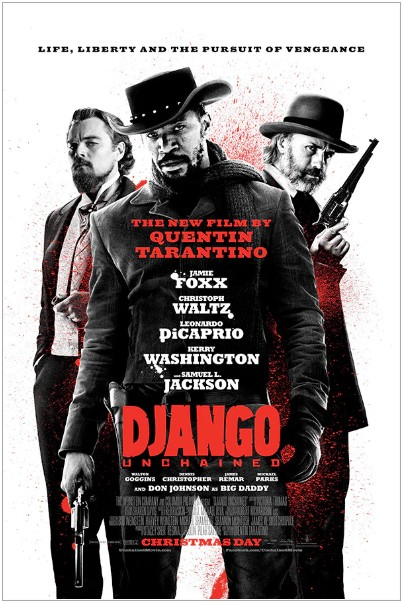 | Django Unchained | 2012 | Jamie Foxx, Christoph Waltz, Leonardo DiCaprio |
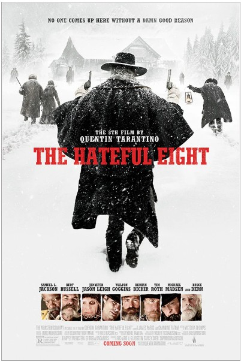 | The Hateful Eight | 2015 | Samuel L. Jackson, Kurt Russell, Jennifer Jason Leigh |
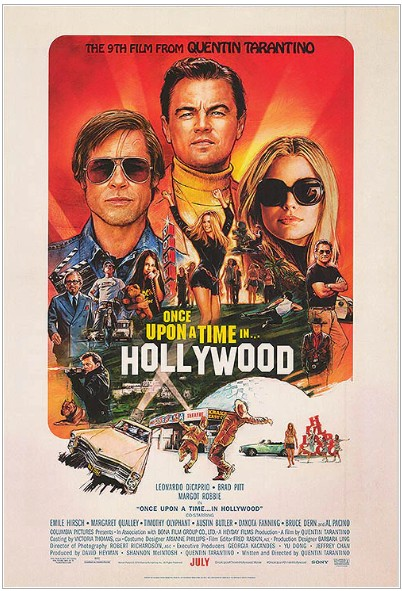 | Once Upon a Time in Hollywood | 2019 | Leonardo DiCaprio, Brad Pitt, Margot Robbie |